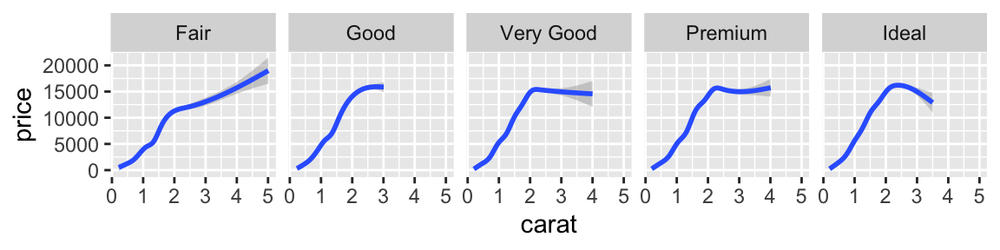

A short description of the post.

# A tibble: 28 x 4
movie release key number
<chr> <chr> <chr> <int>
1 A New Hope 1977-05-25 species 5
2 A New Hope 1977-05-25 planets 3
3 A New Hope 1977-05-25 characters 18
4 A New Hope 1977-05-25 vehicles 4
5 The Empire Strikes Back 1980-05-17 species 5
6 The Empire Strikes Back 1980-05-17 planets 4
7 The Empire Strikes Back 1980-05-17 characters 16
8 The Empire Strikes Back 1980-05-17 vehicles 6
9 Return of the Jedi 1983-05-25 species 9
10 Return of the Jedi 1983-05-25 planets 5
# … with 18 more rowsFor attribution, please cite this work as
Regenstein (2020, March 29). A normal person on earth: Graph test post. Retrieved from https://vinbrule.github.io/hvt2/posts/2020-03-29-graph-test-post/
BibTeX citation
@misc{regenstein2020graph,
author = {Regenstein, Jonathan},
title = {A normal person on earth: Graph test post},
url = {https://vinbrule.github.io/hvt2/posts/2020-03-29-graph-test-post/},
year = {2020}
}